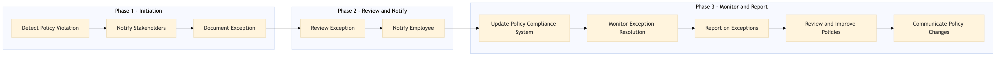

This process document outlines the steps for monitoring and managing exceptions related to business travel policies within the TMC Travel Programme Management domain.
| Trigger | A policy violation or exception is detected during a routine compliance check or reported by an employee. |
| Outcome | Policy violations are identified, documented, and resolved in a timely manner, ensuring ongoing compliance with business travel policies. |
| Systems | Concur T2 Amex GBT Neo/Complete Salesforce Snowflake Tableau S/4HANA Email |

Click to enlarge
| Step | Name & Pain Point | Role | System | Input | Output | KPI | Flags |
|---|---|---|---|---|---|---|---|
| 1.1 | Detect Policy Violation Automated detection may miss complex or nuanced violations. | Compliance Officer | Concur T2, Amex GBT Neo/Complete | Policy violation report or automated compliance check results | List of policy violations | Time to detect a policy violation | ⚠ Exception |
| 1.2 | Notify Stakeholders Ensuring all relevant parties are notified promptly. | Compliance Officer | Salesforce, Email | List of policy violations | Notification to relevant stakeholders | Time to notify stakeholders | ⚠ Exception |
| 1.3 | Document Exception Accurate and complete documentation of exceptions. | Compliance Officer | Concur Expense, Snowflake | Notification to stakeholders | Detailed exception report | Time to document the exception | ⚠ Exception |
| 1.4 | Review Exception Balancing compliance with business needs. | Manager/Supervisor | Concur T2, S/4HANA | Detailed exception report | Approval or rejection of the exception | Time to review and approve/reject exceptions | ◆ Decision⚠ Exception |
| 1.5 | Notify Employee Clear communication of policy compliance status. | Manager/Supervisor | Email, Salesforce | Approval or rejection of the exception | Notification to the employee | Time to notify the employee | ⚠ Exception |
| 1.6 | Update Policy Compliance System Ensuring accurate and up-to-date records. | Compliance Officer | Concur T2, Snowflake | Notification to the employee | Updated policy compliance record | Time to update the system | ⚠ Exception |
| 1.7 | Monitor Exception Resolution Continuous monitoring of ongoing exceptions. | Compliance Officer | Concur T2, Snowflake | Updated policy compliance record | Monitoring report | Time to monitor exception resolution | ⚠ Exception |
| 1.8 | Report on Exceptions Generating insightful and actionable reports. | Compliance Officer | Tableau, Analytics Cloud | Monitoring report | Exception report | Time to generate exception reports | ⚠ Exception |
| 1.9 | Review and Improve Policies Balancing flexibility with strict compliance. | Policy Manager | Salesforce, S/4HANA | Exception report | Updated policy document | Time to review and update policies | ◆ Decision⚠ Exception |
| 1.10 | Communicate Policy Changes Effective communication of policy updates. | Policy Manager | Email, Salesforce | Updated policy document | Notification to employees | Time to communicate policy changes | ⚠ Exception |